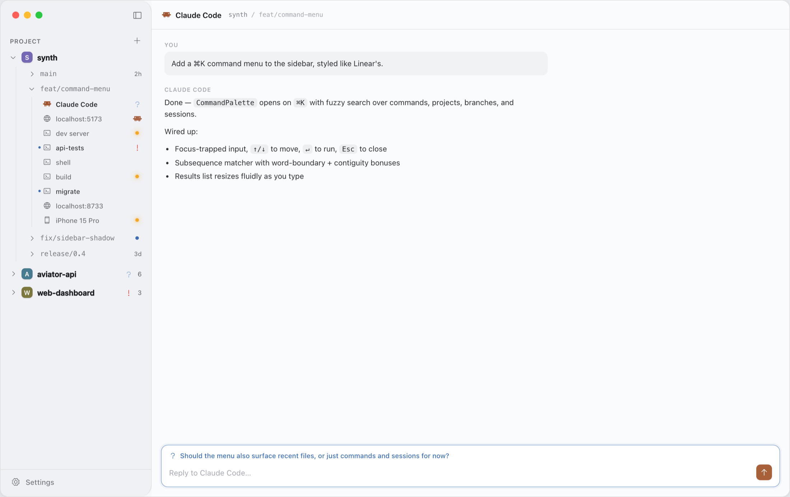
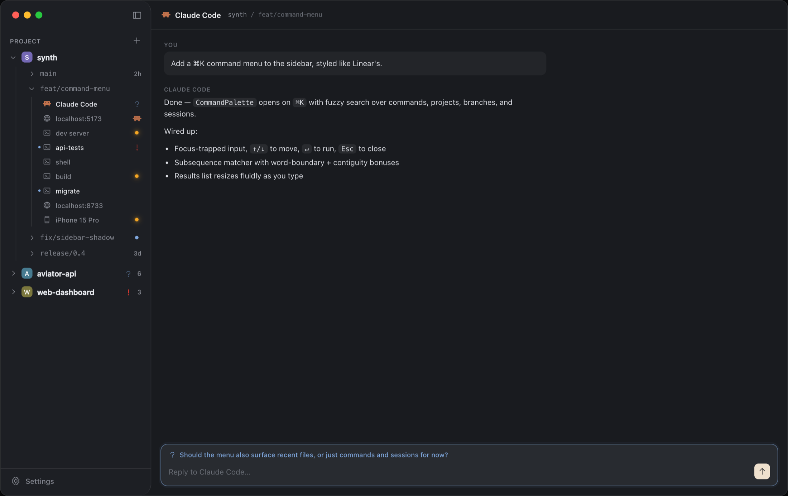
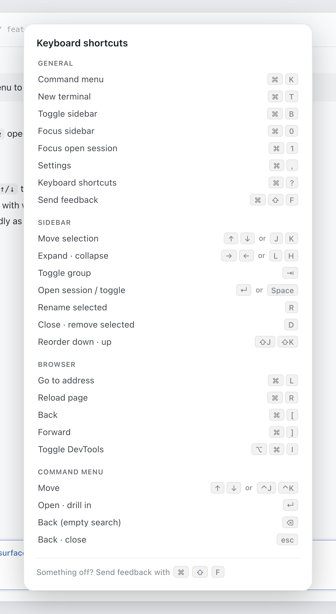
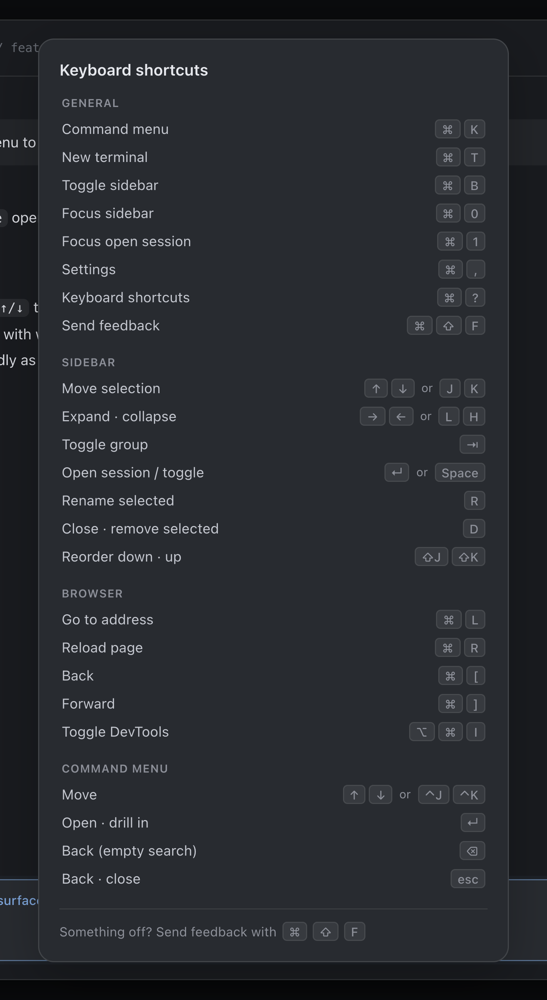
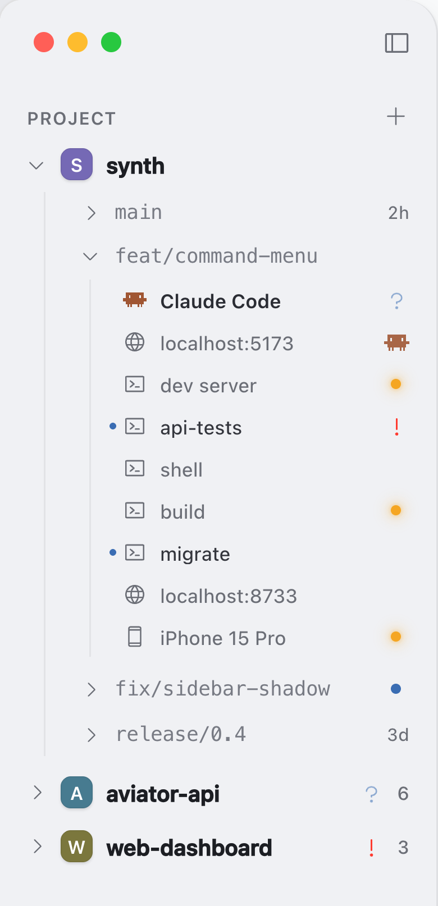
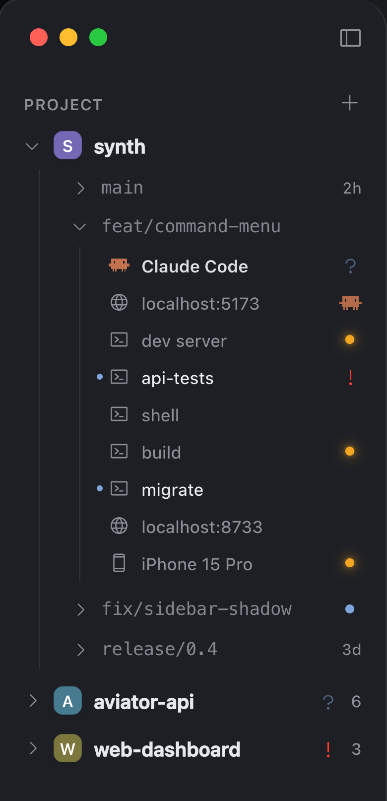
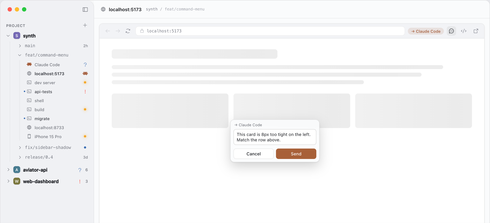
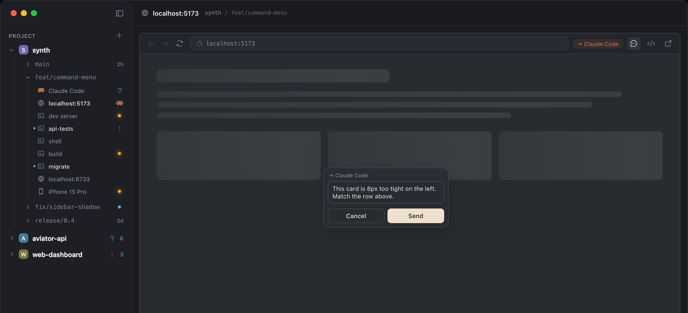
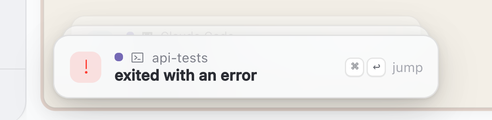
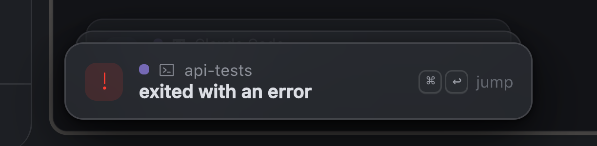

Run all your coding agents in one window.
A native macOS app for Claude Code and OpenCode. It keeps your terminals, your agents, and their browser in one place.


Works with the agents you already use.
A fast terminal, and fast to move around.
The terminal is libghostty, so it draws on the GPU. The app is native Swift, not Electron.
You can hit ⌘K, then ⌘T, then ⌘1 one after another
and it keeps up with you.


Keep every project open at once.
Projects hold branches, branches hold sessions. Each branch is a real git worktree checked out on disk, so an agent working one never touches the folder another is building in.
Collapse a branch and its sessions roll up into one indicator, so you can still see whether something needs you in a repo you are not looking at.


Your agent can use the browser, and so can you.
Give an agent a browser session and it can open your dev server, click around it, and take screenshots. Click any element on the page to leave a comment, and the agent gets the screenshot and knows which element you meant.


Synth tells you when a session needs you.
When a session you are not watching needs an answer, fails, or finishes, you get a notification, and
⌘↩ takes you straight to it. If you are in another app, you get a Notification
Center banner instead.

